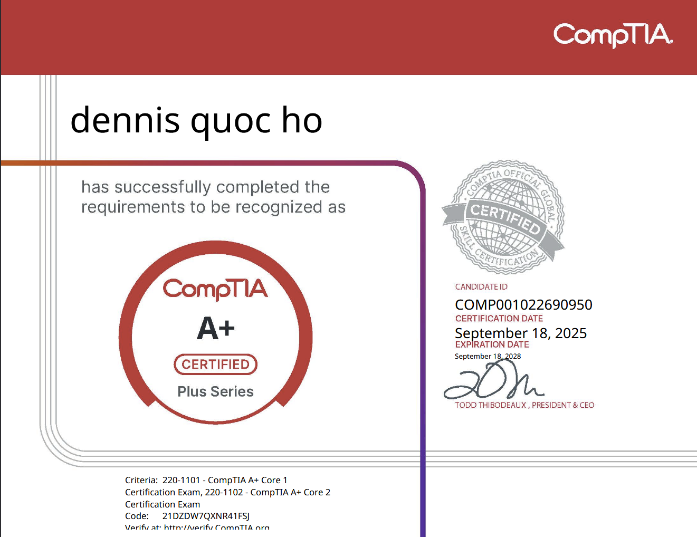
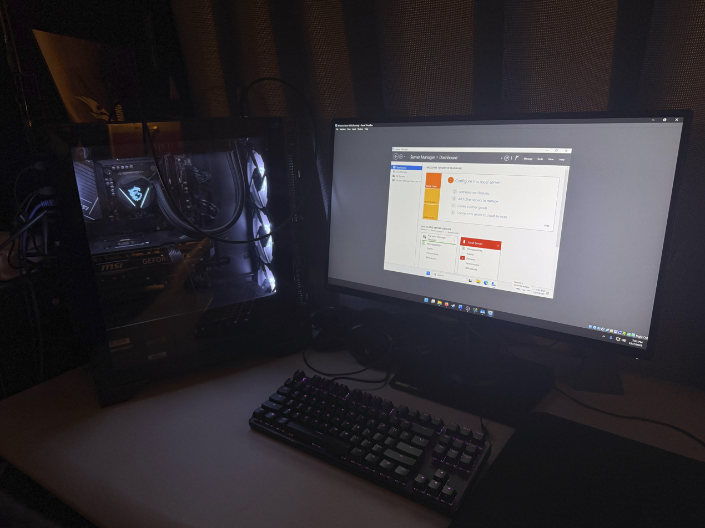
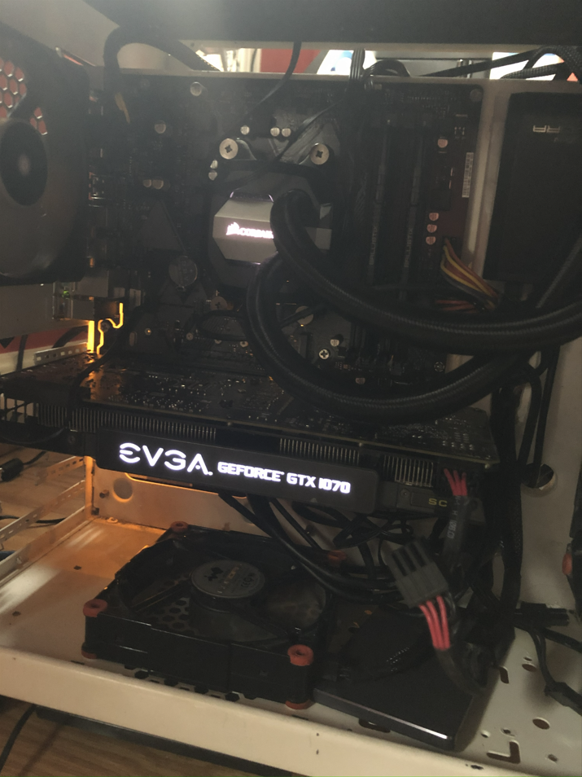

I’m a recent Cybersecurity graduate from the University of Maryland Global Campus, and I’ve been surrounded by technology for as long as I can remember. I began developing basic troubleshooting skills in late high school and early college, which quickly grew into a passion for helping others solve technical problems. Over the years, I’ve used my knowledge to support friends, family, and my community with their IT needs. Since graduating, I’ve strengthened my skills by earning my CompTIA A+ certification and pursuing additional IT certifications, preparing myself for a professional role in technical support.
I’ve been building, maintaining, and troubleshooting PCs since high school, gaining hands-on experience through years of upgrades and repairs. Over time, I’ve used that knowledge to help friends, family, and now my community as a St. Joseph’s IT volunteer. I also manage my home network setup to keep everything running smoothly through multiple router and modem upgrades. To continue improving, I’ve built a small lab computer where I practice common IT Help Desk scenarios.
Technology has shaped my life in meaningful ways, from the games I grew up playing to the tools that keep me connected with people. I enjoy helping others solve IT issues and using my experience to get them up and running again. Problem-solving gives me a sense of accomplishment, especially when I can turn confusion into clarity for someone else. My long-term goal is to build a career in cybersecurity by growing through roles such as Help Desk.

My CompTIA A+ certification

Updating the BIOS of a friend's computer for a CPU upgrade

One of my first PC builds